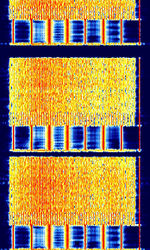

Click here to go back to the main page.
| Name: |
CIS-112 Signabroam ID: MD112 |
|---|---|
| Frequencies | Multiple |
| Status | Active |
| Voice | Male, Female |
| Mode | USB/LSB/DSB/AM, DQPSK22.22 |
| Location | Russia |
| Description |
CIS-112 OFDM signal. Has a preamble of 8 Tones (including carrier), then a 56 tone OFDM preamble before entering into the 112 tone data transmission. Each channel uses DQPSK at 22.22 baud. As with all MPSK CIS signals, there is a pilot tone 3300 Hz from the suppressed carrier. More details (and also the description) at/from : https://www.sigidwiki.com/wiki/CIS-112. |
| Media |
Waterfall image from sigidwiki.com:  |